Salibandyseurat
- 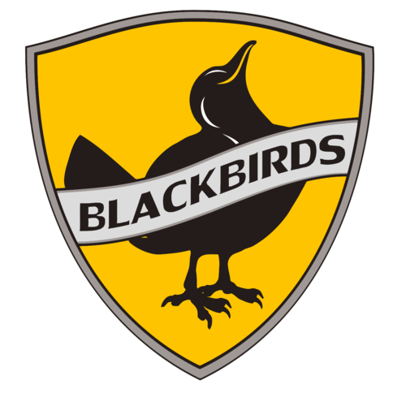 Balckbirds United (Kerava)
- Classic United (Tampere)
- 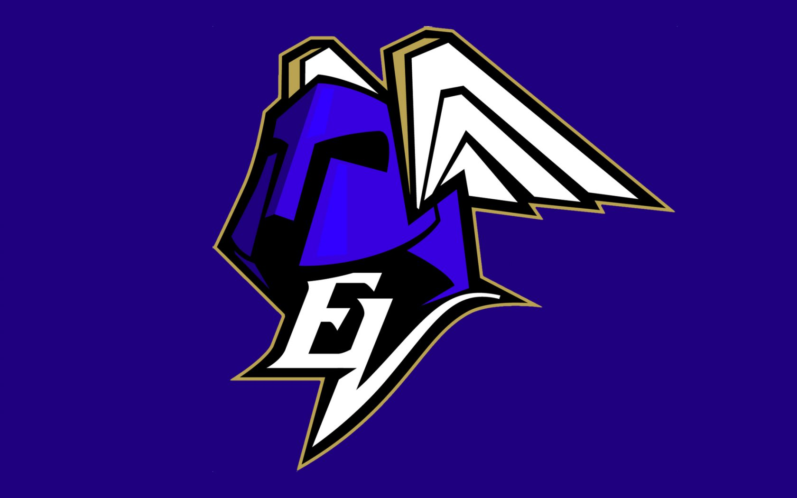 EräViikingit (Helsinki)
- 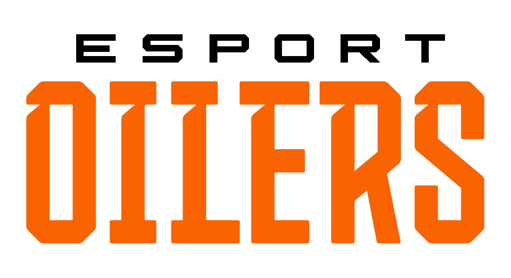 Esport Oilers (Espoo)
- 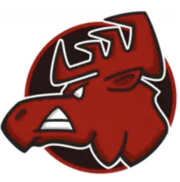 Happee (Jyväskylä)
- 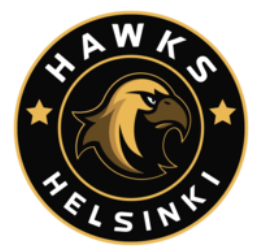 Hawks (Helsinki)
- 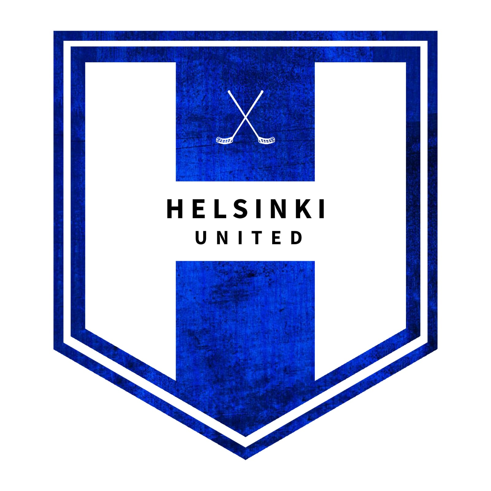 Helsinki United
- 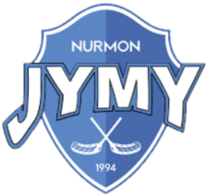 Jymy (Seinäjoki)
- 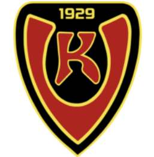 Koovee (Tampere)
- 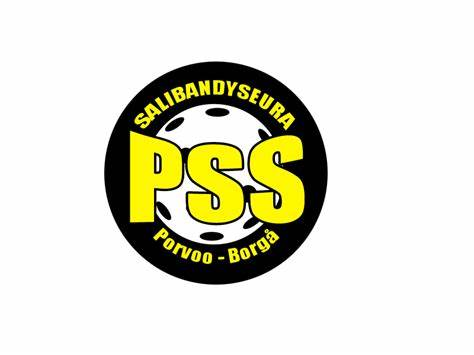 Pss eli Porvoon salibandyseura
- 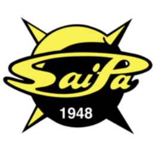 Saipa eli Saimaan Pallo
- 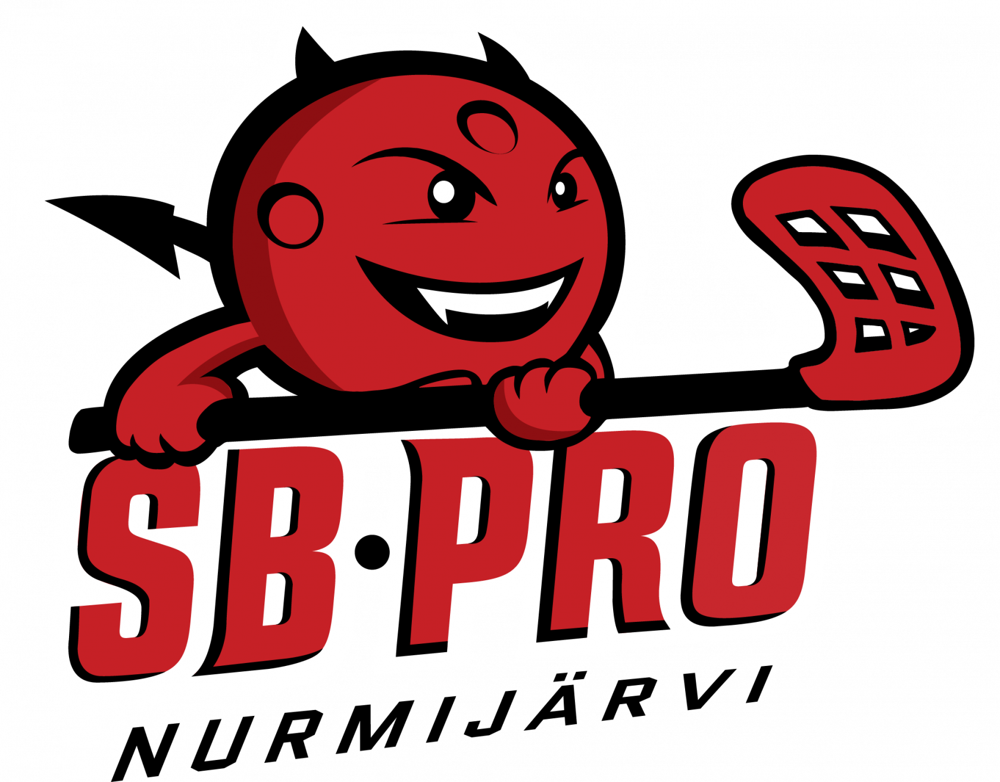 SB-Pro Nurmijärvi
- 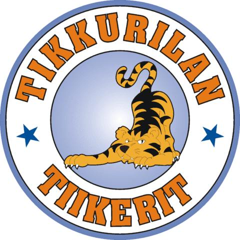 Tikkurilan Tiikerit (Vantaa)
- TPS (Turku)
- Westend Indians (Espoo)
Lisätietoa!
Yläpuolella on vain hyvin pieni osa kaikista Suomessa olevista salibandyseuroista. Listassa on kuitenkin muutama todella tunnettu ja iso seura. Painamalla nimiin kiinnitetyistä linkeistä, pääset kyseisen seuran nettisivulle.
Täältä löydät tarkemman listauksen kaikista seuroista!